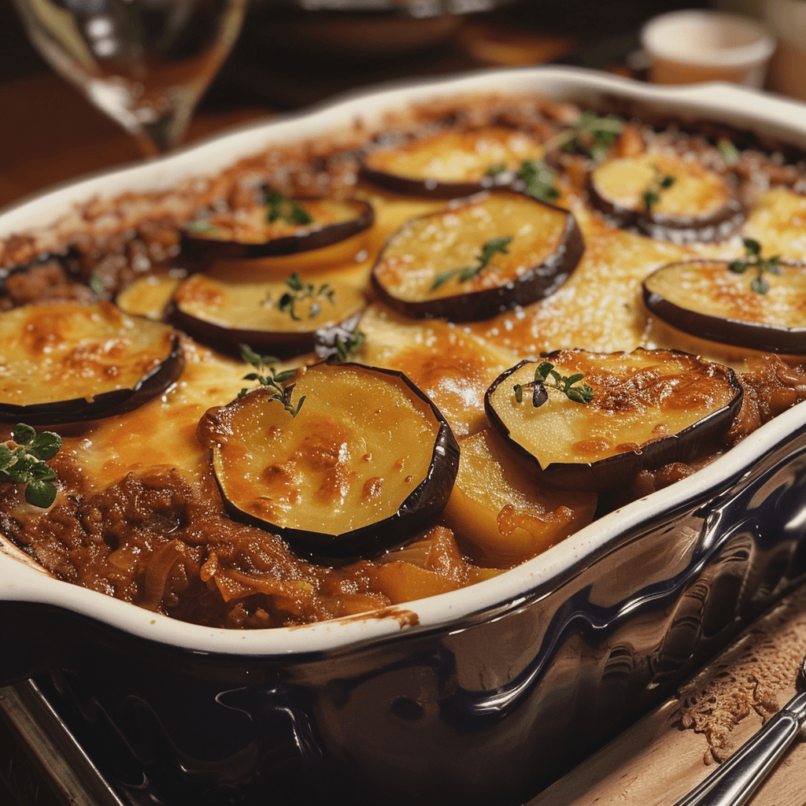

Moussaka
Ingredients:
- 4 Aubergines
- 500g Brown Lentils
- 3 Onions
- 1 Bulb Garlic
- 4 Tomatoes
- 1 Egg
- 50g Parmesan
- 50g Butter
- 500ml Milk
- 250g Flour
- Olive Oil
Seasoning to One's Taste:
- Salt
- Pepper
- Thyme
- Cinnamon
- Nutmeg
- Parsley

- Place the slices of eggplant on paper towels, sprinkle lightly with salt, and set aside for 30 minutes to draw out the moisture. Then in a skillet over high heat, heat the oil. Quickly fry the eggplant until browned. Set aside on paper towels to drain.
- In a large skillet over medium heat, melt the butter and add the ground beef, salt and pepper to taste, onions, and garlic. After the beef is browned, sprinkle in the cinnamon, nutmeg, thyme and parsley. Pour in the tomato sauce and mix well. Simmer for 20 minutes. Allow to cool, and then stir in beaten egg.
- To make the bechemel sauce, melt the butter in a large saucepan over medium heat. Whisk in flour until smooth. Gradually pour in the milk, increase the heat to medium high once all the milk is in the pan, bring it close to boiling, but not boiling, keep whisking until thickened. Season with salt, and white pepper. In the last minute of cooking add the fresh thyme and quickly whisk in the beaten egg.
- Arrange a layer of eggplant in a greased 9x13 inch baking dish. Cover eggplant with all of the meat mixture, and then sprinkle 1/2 cup of Parmesan cheese over the meat. Cover with remaining eggplant, and sprinkle another 1/2 cup of cheese on top. Spread the bechemel sauce over the top. Sprinkle with the remaining cheese.
- Bake for 1 hour at 200°C or until bechamel sauce is nicely browned.